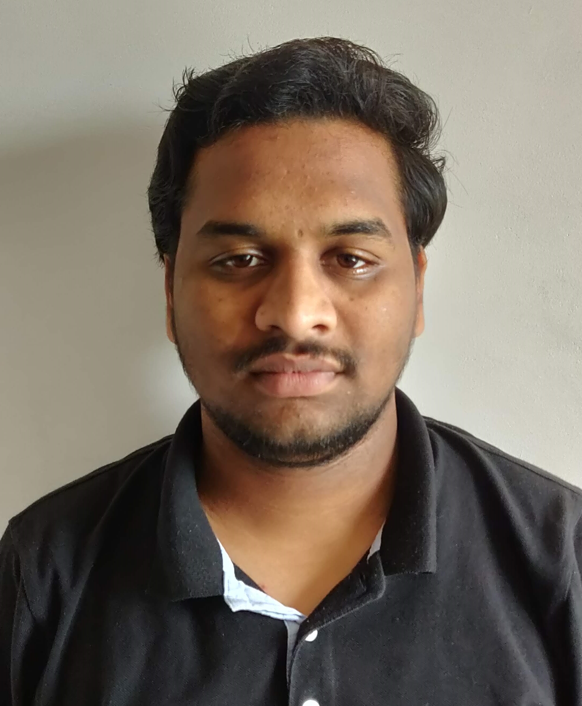

SHANMUKHA RAO SAMANTHULA
B. Tech, Computer Science & Engineering
Indian Institute of Technology, Hyderabad
Mobile: +919000273721
E-mail: sraosamanthula@gmail.com
LinkedIn: sraosamanthula
Correspondence Address:
Door no.: 1-176
Karanam Veedhi,Main Road
Gottamangalapura,Palakonda
Srikakulam
Andhra Pradesh, PIN: 532440
EDUCATIONAL QUALIFICATIONS:
EXPERIENCE:
ACHIEVEMENTS:
- Joint Entrance Examination 2016: Secured All India Rank 2022
TECHNICAL SKILLS:
Programming Languages: Python, C++, C, Java*
Web Technologies: HTML, CSS, Js
Databases: MongoDB, Postgressql
Operating System: Windows, Linux
MINI PROJECTS:
- Docto
web service for medical professionals and commoners to creating an interactive community for medical professionals and making the life of patients/commoners simpler with simple and yet powerful ruby on rails framework.
- Recommendation System for POI
The implemented paper "Time aware point of interest recommendation". Ac to the Paper, we divided 24 hrs into optimal time slots and recommended POI (Point of Interest) based on collaborative filtering instead of content-based.
- Document Management System
Create a document management system with a website as UI interface created using GO language and Apache Solr, the document has creation, modification, and deletion. user has different roles approver, creator, modifier, reviewer, etc. Dr. Manish Singh, Assistant Professor, Dept. of Computer Science & Engineering, IIT Hyderabad
OBJECTIVE:
To Succeed in an environment of growth and excellence, earn a job provides me job satisfaction and self-development and helps me achieve personal as well as organizational goals.
EXTRACURRICULARS:
- NSS Volunteer during B. Tech: Participated in various NSS events like e-vidyadaan (preparing presentations for school students based on NCERT textbooks), Clean India Drive, volunteering for Registration Day.
- Event Organizing in ELAN and nvision college fest: Organized event in ELAN & nvision 2017, cultural and technical fest of IIT Hyderabad.
- Hackathons: Participated in a 2-day hackathon to recommend products on huge data.
LANGUAGES KNOWN:
English:
Read, Write, Speak
Telugu: Read, Write, Speak(Mother Tongue)